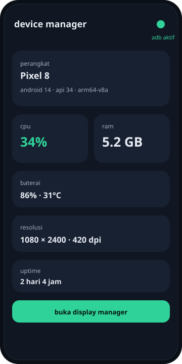
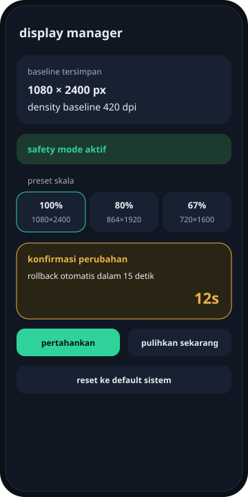
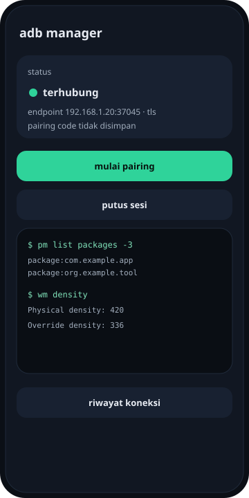

aplikasi Android open source buat melihat status perangkat, mengatur resolusi dan density lewat wm, mengelola aplikasi, serta menjalankan shell ADB — semua lewat wireless debugging, tanpa root.

wireless debugging (pairing dari menu developer options) baru tersedia mulai Android 11. di bawah versi itu, aplikasi tidak bisa membentuk sesi ADB.


tampilan di atas adalah mockup SVG untuk gambaran UI, bukan tangkapan layar langsung dari perangkat.
apk ini build debug yang ditandatangani dengan kunci debug. sistem mungkin menampilkan peringatan saat instalasi.